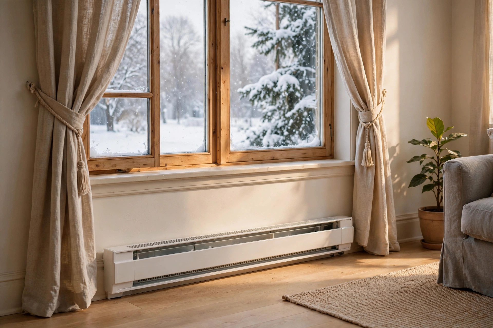

Electric Baseboard Heat: 7 Habits That Cut Winter Bills

Electric baseboard heaters are in millions of Canadian homes — simple, quiet, reliable, and expensive to run if you manage them badly. The scale is worth knowing: BC Hydro figures show a single baseboard heater running 24 hours a day uses 333.49 kWh, which costs about $33.32 a month per unit in British Columbia — roughly double that in Ontario, where running several heaters can add up to hundreds of dollars a month. The heaters themselves convert electricity to heat at essentially 100% efficiency, so no new unit will "save energy" over an old one. Savings come from how you run them. Here are the seven habits, starting with the October job.
1. Do the October pre-season clean
Dust is the number-one enemy of baseboard heaters. It settles on the heating element and fins all summer, then burns off with a smell in October — and while it's sitting there, it reduces efficiency and, left long enough, carries a small fire risk. Do this before the heating season starts:
- Kill the power at the breaker for the heaters you're cleaning. Thermostat off is not enough when your hands are going inside the unit.
- Vacuum the exterior — the top grille and front panel — with a brush attachment.
- Pop off the front panel (most lift or unclip) and vacuum inside the unit: the fins, the element, and the bottom channel where dust collects. Check for foreign objects — toys, paper, anything that fell in.
- Wipe down the exterior with a mild household cleaner once the dust is off.
- Clear the airflow zone: move furniture, rugs, and drapes away, and confirm at least 12 inches of clearance between any hanging curtains and the heater.
What success looks like: fins visibly clean, nothing blocking the unit, 12 inches of clear space above it. Repeat the vacuum mid-winter — two to three cleanings a year is the maintenance sweet spot.
2. Zone-heat: warm the rooms you use, and only those
Unlike a central furnace, baseboard heaters are naturally zoned — each room's heater is independent. That's the whole advantage, if you use it: turn off heaters in unoccupied rooms, close the doors to trap heat where you actually are, and only heat the room you're in, since baseboard heaters don't circulate air between rooms.
The one rule: for rarely used spaces, lower the thermostat instead of shutting it off completely — about 16°C is the safe minimum. A room at 16°C keeps pipes from freezing; a room at 5°C is a burst-pipe gamble. When you're away from home entirely, 16°C across the board is the rule of thumb: colder, but your pipes won't freeze.
3. Set temperatures like you mean it
Around 18–20°C is comfortable for most people, and lowering the thermostat by just 1°C can cut annual heating costs by 5–10%. Costs climb roughly 5% for every degree over 20°C — so going from 20 to 22°C costs noticeably more, and a sweater is cheaper than the dial.
Lower the setting at night (better sleep and savings) and when you're away, ideally with a programmable thermostat so it happens automatically. Smart thermostats compatible with baseboard heaters exist, and scheduling is where the real savings hide.
4. Don't crank it — it doesn't heat faster
Coming home to a chilly house and twisting the thermostat to 25°C does nothing to warm the room faster. Heaters produce heat at the same rate regardless of the setting; the higher number just keeps the unit running longer — and you'll probably forget to turn it back down, so it keeps that higher heat while you're not home. Set the temperature you actually want and leave it.
5. Upgrade the control, not the heater
Here's a useful asymmetry: replacing the heater itself won't save energy — all electric heaters convert electricity to heat at essentially the same efficiency — but upgrading the control can. Moving from a manual dial to a programmable wall thermostat brings more consistent room temperatures and scheduling (lower at night, lower when you're away, back up before you're home), and scheduling is where the real savings hide. If a room swings between too hot and too cold, the thermostat is the first suspect, not the heater.
6. Seal the drafts under the windows
Baseboard heaters usually sit under windows — exactly where cold air infiltrates strongest. Weatherstrip or caulk around window frames, add insulating window film for the winter months, and hang thick curtains or thermal blinds. If the heater is fighting a draft, it's working overtime; fix the draft and the heater can run less.
7. Push warm air back down
Hot air rises, so your ceiling can be toasty while your feet are cold. Run ceiling fans on low, clockwise, in winter to gently push warm air back down. It evens out hot and cold spots and lets the heaters run at lower settings without losing comfort.